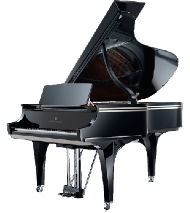
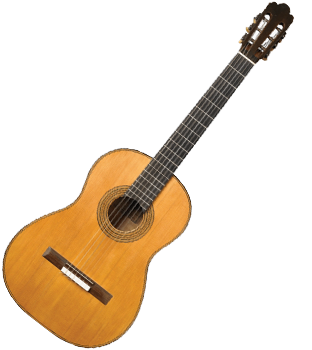

Εκτός από το μπουζούκι, ξέρεις ποιο μουσικό όργανο μου άρεσε πολύ να παίζω όταν ήμουν μικρός;


Αν και όλος ο κόσμος γνωρίζει ότι παίζω μπουζούκι, δε γνωρίζει ότι στα πρώτα χρόνια στο γυμνάσιο
έμαθα να παίζω βιολί και μάλιστα ήμουν πολύ καλός σε αυτό.